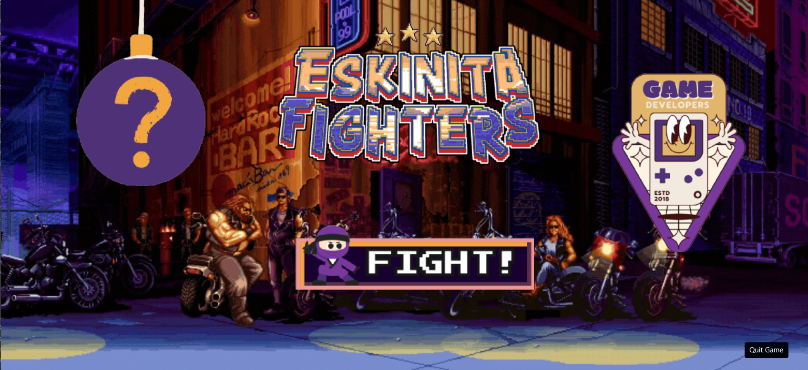

Previous Projects
CMSC 22 Final Project. A fighting game coded using java and java FX more details below.

CMSC 21 Final Project. A terminal based application for scheduling spa/salon treatments, with a employee managmeent and customer booking system and dynamic generation of tables is also present.

CMSC 12 Final Project. A terminal based application for handling books in a library, with borrow and return features and a save and load system
Featured Project
 This was the final output that me and my group submitted for our final output in our cmsc 22 class.
it is a basic fighting game programmed using java with java FX for the gui, it has basic functions like jumping, punching, kicking and health.
This project also uses diferently shaped hitboxes through a system which uses array lists and hashmaps
along with a modular state machine that uses a switch case and functions.